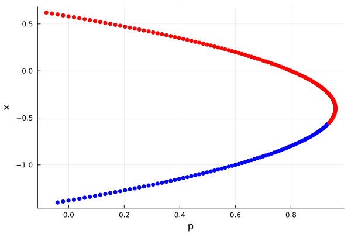

Educational introduction to bifurcation analysis (contributed by G. Datseris)
This page is an educational introduction to bifurcation analysis and creation of bifurcation diagrams. It will show a completely self-contained approach, and its goal is to serve as an introduction to users not yet fully familiar with bifurcation analysis.
The text here is based on Chapter 4 of Nonlinear Dynamics: a concise introduction interlaced with code and is presented in a shortened form. It is focusing on using the simplest possible method for bifurcation continuation (the secant method) and can only address fixed points (the standard version of Newton's algorithm). Of course, this does not reflect the full features and power of BifurcationKit.jl, but it shows the basic guiding principles.
Newton's method for finding fixed points
Let $\mathbf{x}$ be a $D$-dimensional vector participating in the continuous dynamical system $\dot{\mathbf{x}} = f(\mathbf{x}, p)$ which also depends on some arbitrary parameter $p\in\mathbb R$. To identify fixed points, we want to find the roots $\mathbf{x}^*$ of $f$. Notice that everything that follows also applies to discrete dynamical systems where $\mathbf{x}_{n+1} = g(\mathbf{x}_n)$. The difference is that we simply define $f = g - \mathbf{Id}$ and find the roots of $f$ again.
To find the roots we can use Newton's method. Starting for some point $\mathbf{x}_0$, the following sequence will (typically) converge to a root:
\[\mathbf{x}_{j+1} = \mathbf{x}_{j} - \delta J_f^{-1}(\mathbf{x}_{j}) f(\mathbf{x}_{j})\]
for $0\le \delta \le 1$ and with $J_f$ the $D\times D$ Jacobian matrix of $f$.
Continuation of a bifurcation curve
A bifurcation curve (in the simplified context of this page) is the location of fixed points versus a parameter $p$. The simplest, but also most brute force, way to compute such a curve would be to scan the parameter axis, and for each parameter value apply Newton's method to find the fixed point. Because there could be more than one fixed points at a given parameter, one needs several initial conditions plugged into Newton's method, to ensure all fixed points are found.
A bit better approach would be to true and continue the curve of the fixed point $\mathbf{x}^*(p)$. To do this one needs two ingredients: (1) a predictor and (2) a corrector. The first estimates a new "seed" for Newton's method that attempts to continue the existing points we have found on the curve. The second corrects this prediction to a point in the state-parameter space that is on the bifurcation curve.
The secant predictor
The simplest predictor is the secant. Let $\mathbf{z} = (\mathbf{x}, p)$. Assuming we have found at least two points $\mathbf{z}^*_m, \mathbf{z}^*_{m-1}$ on the bifurcation curve, we can estimate a continuation $\tilde{\mathbf{z}} = 2\mathbf{z}^*_m - \mathbf{z}^*_{m-1}$ (linear extrapolation). This is called the secant predictor.
The corrector
The prediction $\tilde{\mathbf{z}}$ of the secant needs to be corrected not only in the variable space $\mathbf{x}$, which is what Newton's method currently does, but also on parameter space. To do this, we need to extend the function $f$ to have one more element (because otherwise we would have 1 too many unknowns give the amount of equations we have to estimate the zero of $f(\mathbf{z})$). We will extend $f$ so that its $D+1$ entry enforces the $k$-th element of the root to be the one suggested by the predictor. I.e., we define the function $h$
\[h(\mathbf{x}) = (f_1(\mathbf{z}), \ldots, f_D(\mathbf{z}), \mathbf{z}[k] - \tilde{\mathbf{z}}[k])\]
and will try to find the zeros of $h$ now via Newton's method. Notice that now the Jacobian $J_h$ is $D+1$ dimensional, with the last column being the derivatives of $f$ towards the parameter $p$.
Code: Newton's algorithm in mixed space
Let's first write the code that will be performing Newton's algorithm for the function $h$ in the mixed space of $\mathbf{z}$. For convenience, we would expect the user to only provide the functions $f, J_f$ as functions f(x, p), J(x,p) with x a vector and p a number. We can do everything else using automatic differentiation.
(Notice: for simplicity, and to be in style with BifurcationKit.jl we will make everything allocate and return new Vector instances. Performance-wise, the code written in this page is as bad as it can possibly get)
First, define a function that given f, J, the mixed state z and the index k it returns the mixed Jacobian $J_h$
using ForwardDiff # for auto-differentiationusing LinearAlgebrafunction mixed_jacobian(z, k, f, J) x = z[1:end-1]; p = z[end] # start creating the mixed space jacobian j = J(x, p) # to the state space jacobian add one more column, derivative towards p pder = ForwardDiff.derivative(p -> f(x, p), p) Jmixed = hcat(j, pder) # add the last row, which is 1 for the `k` entry, 0 everywhere else last_row = zeros(length(z)); last_row[k] = 1.0 Jfinal = vcat(Jmixed, last_row') return Jfinalendmixed_jacobian (generic function with 1 method)Then we write a function that takes one step of the Newton's algorithm:
using LinearAlgebrafunction newton_step!(zⱼ, zpred, i, f, J, δ) Jfinal = mixed_jacobian(zⱼ, i, f, J) xⱼ = zⱼ[1:end-1]; pⱼ = zⱼ[end] g = f(xⱼ, pⱼ) gz = vcat(g, zⱼ[i] - zpred[i]) zⱼ₊₁ = zⱼ - Jfinal \ gz return zⱼ₊₁endnewton_step! (generic function with 1 method)Code: Corrector function
And with this, we are ready to compose our corrector function, that takes a guess zpred and brings it to a point that is on the bifurcation curve. The keyword arguments help us give a convergence criterion to Newton's algorithm and also catch problematic cases where convergence never happens in time.
function corrector(zpred, f, J; δ = 0.9, max_steps = 200, ε = 1e-6, k = 1) c = 0 zⱼ = zpred zⱼ₊₁ = newton_step!(zⱼ, zpred, k, f, J, δ) while norm(zⱼ₊₁ - zⱼ) > ε zⱼ = zⱼ₊₁ zⱼ₊₁ = newton_step!(zⱼ, zpred, k, f, J, δ) c += 1 if c > max_steps @warn("Newton did not converge.") return (zⱼ₊₁, false) end end return zⱼ₊₁, trueendcorrector (generic function with 1 method)Code: Predictor function
Coding the predictor is trivial. If we have no previous entries we start from the initial seed given by the user, otherwise we take do the linear extrapolation discussed above. A user also needs to provide an initial direction $d\mathbf{z}$ to go towards.
function predictor(zs, dz0) if length(zs) == 1 return zs[end] elseif length(zs) == 2 # 1 entry is z0, 2nd entry is 1st found fixed point return zs[end] .+ dz0 else return 2zs[end] .- zs[end-1] endendpredictor (generic function with 1 method)Code: Continuation function
Alright, now we can put it all together into the a single "continuation" function.
function continuation!(zs, f, J; dz0, pmin, pmax) zpred = predictor(zs, dz0) (pmin ≤ zpred[end] ≤ pmax) || return false zˣ, success = corrector(zpred, f, J) push!(zs, zˣ) return successendusing LinearAlgebra: eigvals# Continuation loop: do continuation for a given amount of stepsfunction continuation(f, J, x0, p0; pmin, pmax, dp0, dx0, N = 1000) z0 = vcat(x0, p0); zs = [z0]; dz0 = vcat(dx0, dp0) ps = [p0] xs = [x0] stability = Bool[] for i in 1:N success = continuation!(zs, f, J; dz0, pmin, pmax) # Stop iteration if we exceed given parameter margins success || break # Detect stability of found fixed point (needs `Array` coz of StaticArrays.jl) eigenvalues = eigvals(J(zs[end][1:end-1], zs[end][end])) isstable = maximum(real, eigenvalues) < 0 push!(stability, isstable) end xs = [z[1:end-1] for z in zs] ps = [z[end] for z in zs] popfirst!(xs); popfirst!(ps) # remove initial guess return xs, ps, stabilityendcontinuation (generic function with 1 method)The code also returns the fixed point stability, although it does assume we have a continuous dynamical system. Adjusting for discrete systems is straightforward.
Running an example
Let's use the code we have defined to run an example. The following dynamical system has a single saddle node bifurcation, and a fixed point that is "flat" versus the parameter change.
function maasch_rule(u, p) x, y, z = u q, r, s = 1.2, 0.8, 0.8 dx = -x - y dy = -p*z + r*y + s*z^2 - z^2*y dz = -q*(x + z) return [dx, dy, dz]endfunction maasch_jacob(u, p) x, y, z = u q, r, s = 1.2, 0.8, 0.8 return [-1 -1 0; 0 (r - z^2) (-p + 2z*s - 2z*y); -q 0 -q]endmaasch_jacob (generic function with 1 method)We now use it to get the bifurcation curve.
pmin = -0.1pmax = 2δ = 0.9p0 = 0.0x0 = [-1.4, -1.4, -1.4]dp0 = 0.02dx0 = [0.01, 0.01, 0.01]xs, ps, stability = continuation(maasch_rule, maasch_jacob, x0, p0; pmin, pmax, dp0, dx0)([[-1.4, 1.4, 1.4], [-1.39, 1.39, 1.39], [-1.38, 1.38, 1.38], [-1.3699999999999999, 1.3699999999999999, 1.3699999999999999], [-1.3599999999999999, 1.3599999999999999, 1.3599999999999999], [-1.3499999999999999, 1.3499999999999999, 1.3499999999999999], [-1.3399999999999999, 1.3399999999999999, 1.3399999999999999], [-1.3299999999999998, 1.3299999999999998, 1.3299999999999998], [-1.3199999999999998, 1.3199999999999998, 1.3199999999999998], [-1.3099999999999998, 1.3099999999999998, 1.3099999999999998] … [0.5300000000000018, -0.5300000000000018, -0.5300000000000018], [0.5400000000000018, -0.5400000000000018, -0.5400000000000018], [0.5500000000000018, -0.5500000000000018, -0.5500000000000018], [0.5600000000000018, -0.5600000000000018, -0.5600000000000018], [0.5700000000000018, -0.5700000000000018, -0.5700000000000018], [0.5800000000000018, -0.5800000000000018, -0.5800000000000018], [0.5900000000000019, -0.5900000000000019, -0.5900000000000019], [0.6000000000000019, -0.6000000000000019, -0.6000000000000019], [0.6100000000000019, -0.6100000000000019, -0.6100000000000019], [0.6200000000000019, -0.6200000000000019, -0.6200000000000019]], [-0.039999999999999855, -0.020099999999999806, -0.0004000000000000364, 0.019100000000000304, 0.03840000000000012, 0.05750000000000027, 0.0764000000000003, 0.09510000000000042, 0.1136000000000005, 0.13190000000000043 … 0.09509999999999659, 0.07639999999999654, 0.05749999999999669, 0.03839999999999655, 0.019099999999996592, -0.00040000000000356347, -0.020100000000003636, -0.04000000000000372, -0.06010000000000364, -0.08040000000000384], Bool[1, 1, 1, 1, 1, 1, 1, 1, 1, 1 … 0, 0, 0, 0, 0, 0, 0, 0, 0, 0])Let's plot this
using Plotscolors = [s ? :blue : :red for s in stability]p = scatter(ps, [x[1] for x in xs]; color = colors, markerstrokecolor = colors, xlabel = "p", ylabel = "x", label = "")